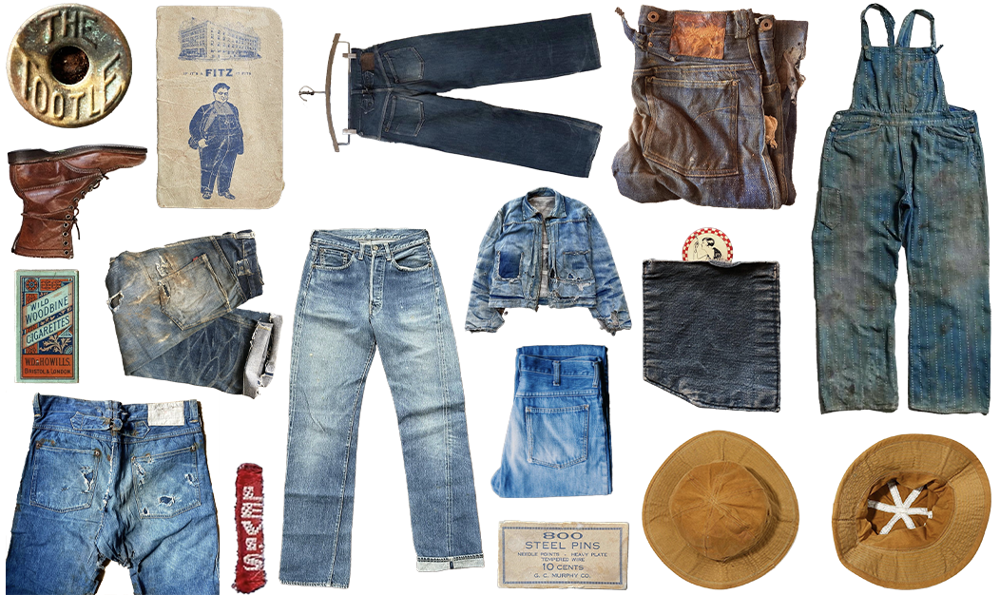
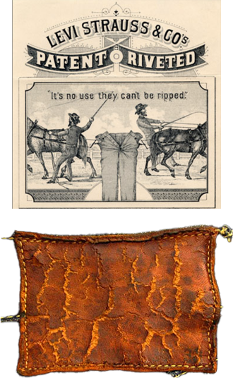
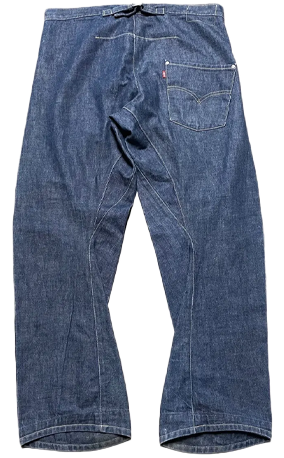
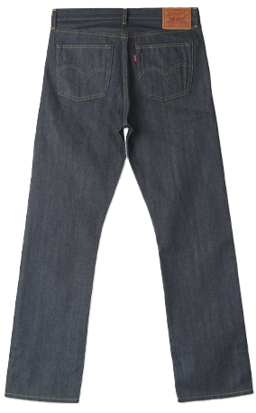
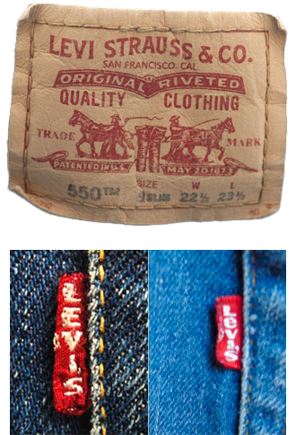

Starting with the Levi's, it all began with The Two Horse brand patch. At least, for the sake of dating a pair of jeans. The Two Horse brand patch was implemented in 1886, sixteen years after Levi Strauss and Jacob Davis patented the copper-riveted waist overall. A pair of Levi's with the Two Horse brand patch still intact is, realistically, near impossible to come by. And if you're lucky enough to find a pair, they'll be far out of reach for the average person. Recently a 1902 pair of 501s in good vintage condition sold for around $35,000 USD.
A Guide to Dating Vintage Denim

Denim garments have been around for nearly 150 years, and have gone through quite the evolution since its inception in 1873. The jean has gone through many makeovers in its already long life, and is now nearly a different piece of garment entirely from the nineteenth-century waist overall design from Jacob Davis and Levi Strauss. This, hardly exhaustive, list will attempt to take you on a walk down memory lane of the history of the denim jean from the three largest denim manufacturers: Levi's, Wrangler, and Lee. From inception through every major variation, all the way to current forms today, highlighting every major difference along the way that will help denim collectors and enthusiasts in accurately dating their American classics.
Levi's

A recreated graphic of 1886 Levi's branding, and a well worn leather patch
However, using The Two Horse brand patch to date denim will seldom be relevant as most vintage jeans are worn and washed countless times which generally results in the patch coming off or becoming entirely undecipherable. Until 1902 Levi's jeans had only one back pocket, that year introduced two square shaped back pockets.

A Levi's Vintage Clothing replica of a pair of cinch-back one pocket jeans
The next "big" change came in 1922 when belt loops were added, however the cinch back still remained. 1936 introduced the iconic and identifiable red tab and removed the suspender buttons. The cinch was removed in 1942 as well as the rivets on the crotch, with a watch pocket being added. Due to the wartime need to conserve resources the arcuate on the back pockets was painted rather than stitched. The stitched arcuate returned post-WWII in 1947.

A Levi's Vintage Clothing replica of 1944 model 501s, with two back pockets, and belt loops fully replacing the cinch-back
This remained the blueprint for Levi's jeans until 1955 when the leather patch was replaced with a Jacron “leather-like” patch, and was altered again in1962 when the “Every Garment Guaranteed”-slogan was removed from the patch. One of the biggest changes came in 1971 when the 'e' on the red tab was changed from a big E, to a small e.

A Jacron patch on a pair of Levi's 550s, and a comparison image of big and small e tags